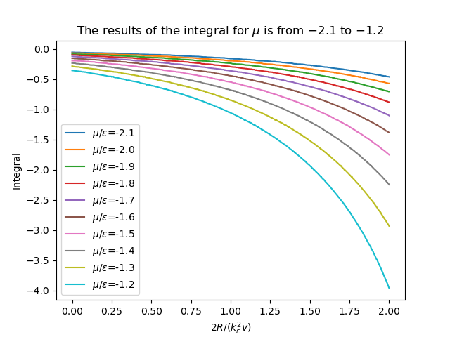
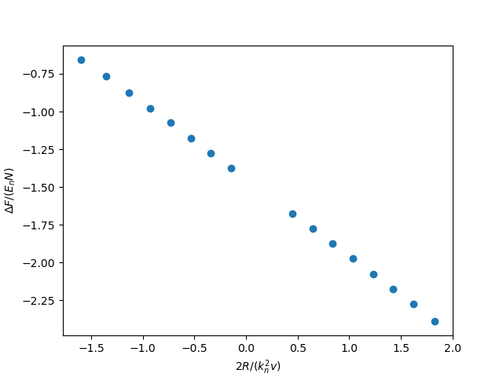

Free Energy vs. Renormalize Paramaters
p-wave
cal
$$\begin{align} \delta^p(\vec{q}, z) =& \mathrm{Arg}\left[ \frac{Mk_{n^2}}{2}\frac{1}{R} \left( \frac{1}{4\pi}\cdot \frac{2R}{k_n^2 v} + \tilde{z}\cdot\frac{1}{4\pi} + \frac{2 R}{M k_n^2}\Pi_r(\vec{q},z) \right) \right] \\ =& \mathrm{Arg}\left[ \frac{1}{4\pi}\cdot \frac{2R}{k_n^2 v} + \tilde{z}\cdot\frac{1}{4\pi} + \frac{2 R}{M k_n^2}\Pi_r(\vec{q},z + \mathrm{i}0^+) \right] \end{align}$$其中 $\tilde{z}z/E_n$ , $E_n k_n^2/(2M)$ , $k_n^3 6\pi^2n$ , $n
N/V$
其中 $\tilde{R} k_nR$ , $\tilde{k} k/k_n$
其中 $\tilde{\xi} \xi/E_n$ , $\tilde{\omega} \omega/E_n$ , $n(\xi)
= \frac{1}{e^{\beta \xi}-1}$
最终
$$\begin{align} \frac{\tilde{\Omega}}{N E_n} =& \frac{1}{N E_n} \frac{V}{(2\pi^3)}\int \mathrm{d}^3\vec{q} \cdot \int \frac{\mathrm{d}\omega}{\pi}\cdot \frac{1}{e^{\beta\omega}-1} \delta^p \\ =& \frac{3}{\pi} \int \mathrm{d}\tilde{q}\cdot \tilde{q}^2 \int_{-\infty}^{+\infty}\mathrm{d}\tilde{\omega} \cdot \frac{1}{e^{\tilde{\beta}\tilde{\omega}}-1} \tilde{\delta}^p(\vec{q},z) \end{align}$$其中 $\tilde{\beta} = \beta E_n$ . 得自由能
$$\begin{align} \frac{F}{NE_n} = \frac{\tilde{\Omega}}{N E_n} -\frac{\mu}{E_n} \end{align}$$即
$$\begin{align} f(\tilde{\mu}, \tilde{R}) = \tilde{\Omega}'(\tilde{\mu}, \tilde{R})-\tilde{\mu} \end{align}$$其中 $\tilde{\mu} = \mu/E_n$.
$\mu$ 由
$$\begin{align} N = - \frac{\partial\Omega}{\partial \mu} \end{align}$$决定.
以 $\varepsilon$ 为单位
若以某一能量 $\varepsilon$ 为单位, 对应的长度单位 $k_{\varepsilon} = \sqrt{2M\varepsilon}$ , 密度单位 $n_{\varepsilon} = k_{\varepsilon}^3/(6\pi^2)$ , 那么
$$\begin{align} \frac{\Omega}{N \varepsilon} = & \frac{n_{\varepsilon}}{n}\int \mathrm{d}\tilde{q}\cdot \tilde{q}^2 \int_{-\infty}^{+\infty}\mathrm{d}\tilde{\omega} \cdot\frac{3}{\pi}\cdot \frac{1}{e^{\tilde{\beta}\tilde{\omega}}-1} \tilde{\delta}^p(\vec{q},z) \\ = & \frac{n_{\varepsilon}}{n}\int \mathrm{d}\tilde{q}\cdot \tilde{q}^2 \int_{-\infty}^{+\infty}\mathrm{d}\tilde{\omega} \cdot f(\tilde{q}, \tilde{\omega}, \tilde{\mu}, \tilde{\beta}) \end{align}$$其中
$$\begin{align} f(\tilde{q}, \tilde{\omega}, \tilde{\mu}, \tilde{\beta}) = \frac{3}{\pi}\cdot \frac{1}{e^{\tilde{\beta}\tilde{\omega}}-1} \tilde{\delta}^p(\vec{q},z) \end{align}$$而
$$\begin{align} \frac{n}{n_{\varepsilon}} =& - \frac{1}{n_{\varepsilon}V} \frac{\partial\Omega}{\partial\mu} =- \frac{1}{n_{\varepsilon}V} \frac{\partial\Omega/\mu}{\partial\tilde{\mu}}\\ =& - \frac{1}{n_{\varepsilon}V} \frac{\partial}{\partial\tilde{\mu}}\left[ V n_{\varepsilon} \int \mathrm{d}\tilde{q}\cdot \tilde{q}^2 \int_{-\infty}^{+\infty}\mathrm{d}\tilde{\omega} \cdot f(\tilde{q}, \tilde{\omega}, \tilde{\mu}, \tilde{\beta}) \right] \\ =& - \frac{\partial}{\partial\tilde{\mu}}\left[ \int \mathrm{d}\tilde{q}\cdot \tilde{q}^2 \int_{-\infty}^{+\infty}\mathrm{d}\tilde{\omega} \cdot f(\tilde{q}, \tilde{\omega}, \tilde{\mu}, \tilde{\beta}) \right] \end{align}$$所以最终要求的为
$$\begin{align} \frac{\Delta F}{NE_n} =& \frac{\Omega}{NE_n} + \frac{\mu}{E_n} \\ =&\frac{\Omega}{N\varepsilon}\left( \frac{\varepsilon}{E_n} \right) + \tilde{\mu} \left( \frac{\varepsilon}{E_n} \right) \\ =& \left( \frac{n_{\varepsilon}}{n} \right)^{5/3} \int\mathrm{d}\tilde{q}\cdot \tilde{q}^2 \int_{-\infty}^{+\infty}\mathrm{d}\tilde{\omega} \cdot f(\tilde{q}, \tilde{\omega}, \tilde{\mu}, \tilde{\beta}) + \tilde{\mu} \left( \frac{n_{\varepsilon}}{n} \right)^{2/3} \\ \end{align}$$横坐标为
$$\begin{align} \frac{2R}{k_n^2v} = \frac{2R}{k_{\varepsilon v}}\cdot \left( \frac{n_{\varepsilon}}{n} \right)^{2/3} \end{align}$$result





code
计算 $\Delta F$
#+BEGIN_SRC python from matplotlib import pyplot as plt import numpy as np from scipy import integrate #from scipy.misc import derivative from scipy.integrate import fixed_quad import time
start = time.process_time()
nn = 10
beta = 1 er = 1e-6 R = 1/30 epsabs = 1e-1
def xi(k, mu): return k**2 - mu def n(k, mu): x = xi(k,mu) # print(x) n = 1 / (np.exp(beta*x) - 1) return n def z(omega, q, mu): return omega - q**2/2 + 2*mu
def pi(omega, q, k, mu): pi = 1 + n(k+q/2, mu) + n(-k+q/2, mu) pi = pi / (xi(k+q/2, mu) + xi(-k+q/2, mu) -omega)
k**4
pi = pi -k**2/2 - z(omega, q, mu)/4 pi = pi*2 / np.pi**2 return pi
def PI(omega, q, mu): zz = z(omega, q, mu) if zz<0: PI, err = fixed_quad(lambda x: pi(omega, q, x, mu), er, 10, n=nn) else: a = np.sqrt(zz/2) PI1, err = fixed_quad(lambda x: pi(omega, q, x, mu), er, a-er, n=nn) PI2, err = fixed_quad(lambda x: pi(omega, q, x, mu), a+er, 10, n=nn) PI = PI1 + PI2
R
return PI
def delta(omega, q, rkv, mu): zz = z(omega, q, mu) if zz<0: img = 0 else: k = np.sqrt(zz/2) img = 1 + n(k+q/2, mu) + n(-k+q/2, mu)
R/(2*np.pi)
k**3
rel = PI(omega, q, mu) rel = rel + rkv/(4*np.pi) rel = rel +zz/(4*np.pi) delta = np.angle(rel + 1j*img) - np.pi return delta def f(omega, q, rkv, mu): f = 1 / (np.exp(beta*omega) - 1)
delta(omega, q, rkv, mu)
f /np.pi
return f
def F(rkv, mu): ff = lambda y, x: f(y, x, rkv, mu) F, err = integrate.dblquad(ff, er, 3, lambda x:er, lambda x:10, epsabs = epsabs) return F
M = 1000 N = 10 x = np.linspace(0, 2, M) y = np.zeros(M*N) y.shape = (M, N)
mu = np.linspace(-2.1, -1.2, N)
for j in range(N): for i in range(M): y[i, j] = F(x[i], mu[j]) print('mu_', j, 'y_', i, '=', y[i, j])
np.savetxt('y.txt', y) print(y)
density = np.zeros(M*(N-2)) density.shape = (M, N-2) dd = mu[1] - mu[0]
for j in range(N-2): for i in range(M): density[i, j] = y[i, j+2] - y[i, j] density[i, j] = - density[i, j] / (2*dd) print('mu_', j, 'density_', i, '=', density[i, j])
np.savetxt('density.txt', density) print(density)
for i in range(N):
plt.plot(x, y[:, i], labelr'$\mu/\epsilon$%.2f' %mu[i])
plt.legend()
end = time.process_time() print('time=', end-start, 'seconds') plt.show()
#+END_SRC
计算 $T_{C}$
#+BEGIN_SRC python N = 100 rkv = np.linspace(-10, -.1, N)
f0 = np.zeros(N) f1 = np.zeros(N) density = np.zeros(N)
for i in range(N): print('rkv_', i, '=', rkv[i]) f0[i] = F(rkv[i], -1e-3) print('f0_', i, '=', f0[i]) f1[i] = F(rkv[i], -.1) print('f1_', i, '=', f1[i]) density[i] = - (f0[i] - f1[i]) / .1 print('density_', i, '=', density[i]) np.savetxt('f0.txt', f0) np.savetxt('f1.txt', f1) np.savetxt('density.txt', density)
x = np.zeros(N) y = np.zeros(N) for i in range(N): x[i] = rkv[i]/(density[i]**(2/3)) y[i] = 1/(density[i]**(2/3)) plt.plot(x, y)
end = time.process_time() print('time=', end-start, 'seconds') plt.xlabel(r'$2R/(k_n^2 v)$') plt.ylabel(r'$k_BT_C/E_n$') plt.show()
#+END_SRC
#+BEGIN_SRC python
def tm(omega, q, rkv, mu):
zz = z(omega, q, mu)
rel = PI(omega, q, mu)
rel = rel + rkv/(4*np.pi)
rel = rel +zz/(4*np.pi)
return rel
N = 1000
M = 20
mu = np.linspace(-80, -1e-2, N)
y = np.zeros(N)
rkv = np.linspace(2, 100, M)
muRoot = np.zeros(M)
for j in range(M):
c = 0
for i in range(N):
y[i] = tm(0, 0, rkv[j], mu[i])
if np.abs(y[i])
Tc = np.zeros(M) Rn = np.zeros(M)
dens = np.zeros(M) for i in range(M): print(i)
.1
print('dd=', dd) f1 = F(rkv[i], muRoot[i]+dd) print('f1=', f1) f2 = F(rkv[i], muRoot[i]-dd) print('f2=', f2) nnn = - (f1 - f2) / (2*dd) print('nnn=', nnn) Tc[i] = 1 / (nnn**2/3) print('Tc=', Tc[i]) Rn[i] = rkv[i] / (nnn**2/3) print('Rn=', Rn[i]) dens[i] = nnn print('dens=', dens[i]) end = time.process_time() print('time is', end-start, 'secends') np.savetxt('density.txt', dens) plt.plot(Rn, Tc) plt.xlabel(r'$2R/(k_n^2 v)$') plt.ylabel(r'$k_BT_C/E_n$')
plt.show()
#+END_SRC